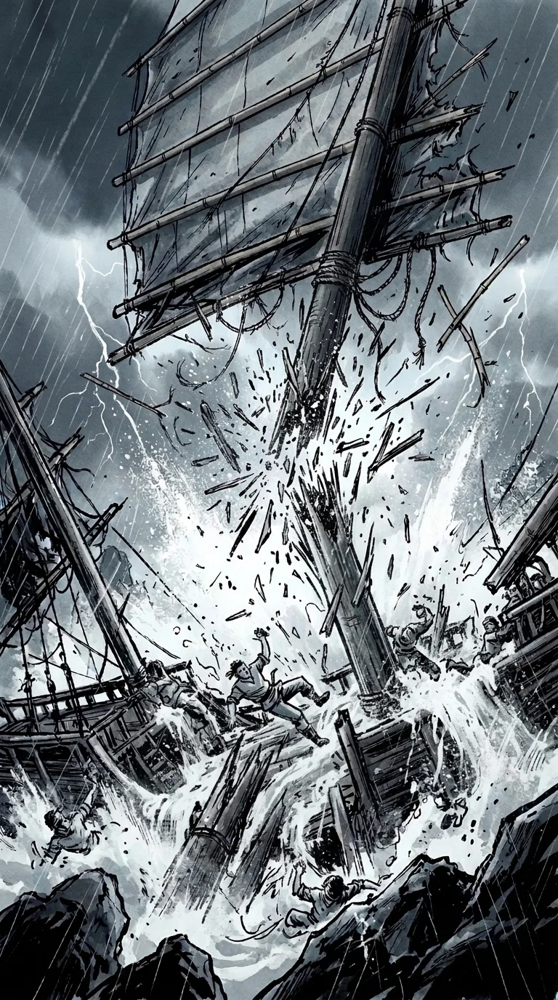

EPISÓDIO VI
Dezassete
Ilha dos Ladrões
Dezassete
Vezes Vendido
Ilha dos Ladrões
A alucinante viagem de Fernão Mendes Pinto pelo Oriente.
A partir da Peregrinação · 1614use auscultadores · desliza ↓
Chamo‑me Fernão Mendes Pinto.
Saí de Portugal aos 21 anos, a jurar que voltava rico.
Desde então, fui preso treze vezes. Vendido dezassete.
A fortuna ainda não chegou. Sou um homem paciente.
Outono de 1540.
Mar da China.
Mar da China.
Outono de 1540.
Mar da China.
1 · Tempestade
01 · T1 · a tempestade
BRRRUUM!
Quatro juncos à caça de um pirata.
Há sete meses que lhe seguimos o rasto.
‹ desliza ›
02 · F1 · António de Faria
António de Faria, o nosso capitão.
Corsário. Bom a lutar, péssimo a perder.
03 · C1 · Coja Acém
O pirata: Coja Acém.
O mais temido destes mares.
Roubou a fortuna do Faria e matou-lhe os homens.
04 · F1b · olhos do Faria
O Faria quer tudo de volta. Com juros.
05 · T2 · o convés
VUUUUSH
Mas esta noite, é o mar que nos caça.
O vento muda. Ninguém gosta disto.
06 · T3 · o Vasco reza
O velho Vasco reza há uma hora.
Nunca o tinha visto rezar.
Rezo também. Por via das dúvidas.
07 · T4 · carga ao mar
CHAAAP!
A carga vai ao mar. A fortuna também.
08 · P0 · o piloto
O piloto grita o nome da ilha.
Ilha dos Ladrões. Promissor.
08b · por fazer
Plano geral da ilha na tempestade.
09 · F2 · o grito
AAAAH!
10 · T5 · as rochas
KRA-KOOM!
As rochas estão perto. Demasiado perto.
11 · A2 · a vaga
VRRUUSH!
Agarro-me ao que posso.
11b · A1 · as mãos no mastro
Não largues. Não largues.

E depois, a queda.12 · S1 · debaixo de água
Caio ao mar.
Prendo a respiração e conto. Perco a conta.
E depois, nada.
Na manhã seguinte…
Na manhã seguinte…
2 · Praia
13 · P1 · o céu
Ainda respiro.
14 · P1b · os olhos a abrir
15 · PF · o Fernão
Estou vivo. Não sei como, nem sei onde.
16 · P2 · a praia
Do barco, sobram tábuas. Da carga, nada.
Da tripulação… vamos contando.
17 · P3 · as mãos
As mãos sangram. Bom sinal: ainda as tenho.
18 · P4 · o terço
O terço do Vasco. O Vasco, não.
19 · P5 · o rapaz
Ninguém fala.
O rapaz tem a idade que eu tinha quando saí de casa.
20 · PW · as fogueiras
Os que restam fazem fogo com o que o mar devolve.
Do Faria, nem sinal.
21 · P6 · o corvo-marinho
Ele olha para mim.
22 · P6b · os olhos do Fernão
Eu olho para ele. Os dois a pensar no jantar.
O dia passa devagar.
A fome, depressa.
A fome, depressa.
O dia passa devagar. A fome, depressa.
24 · G1 · alguém
Ao fim da tarde, aparece alguém.
25 · G2 · a roupa de um morto
Vestido com a roupa de um morto.
Continua…